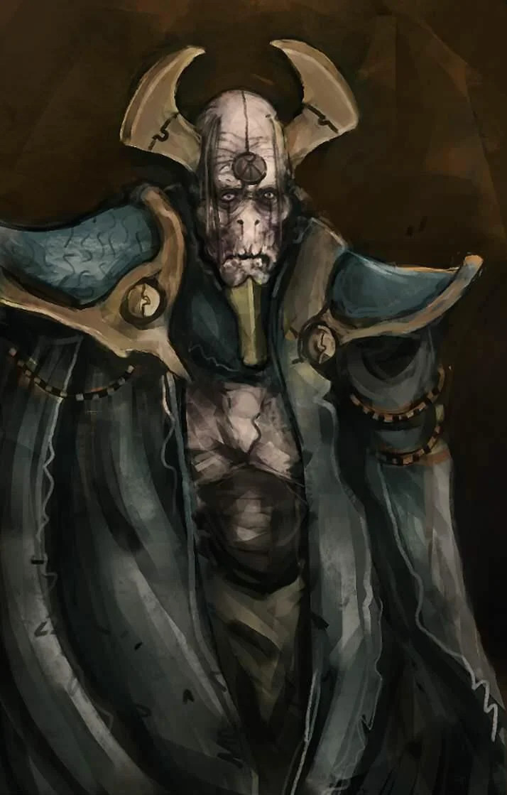
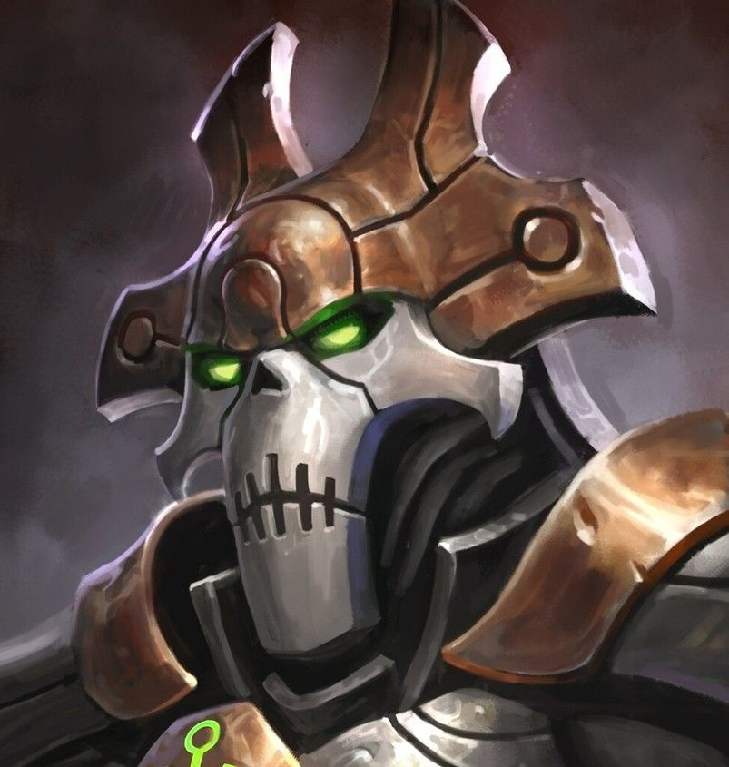
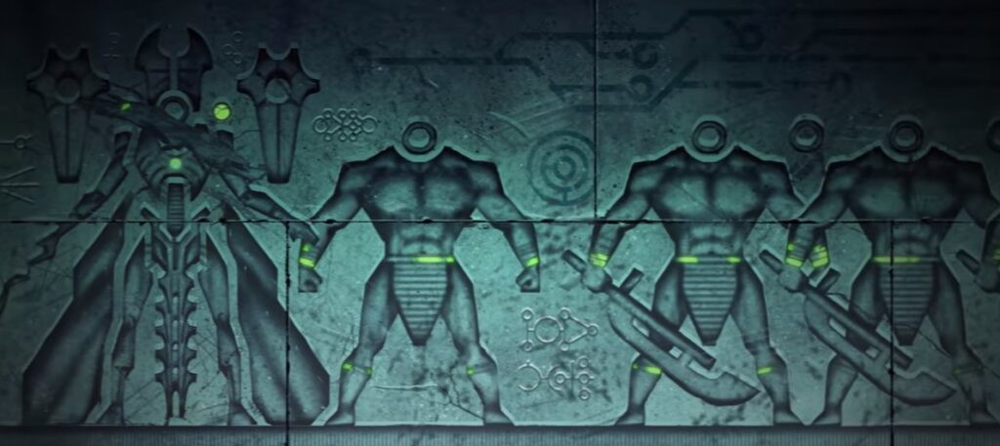
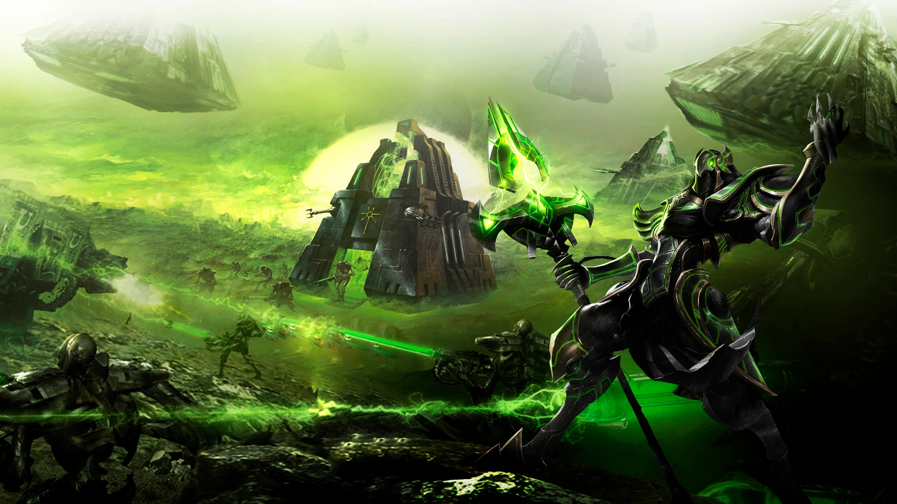

The Necrons are an ancient robotic humanoid species that have mostly lain dormant for the past 60 million years and just now are starting to wake up from their Tomb Worlds to spread their influence throughout the galaxy.
Their technological capabilities are probably the most advanced in the galaxy and they are looking to regain their control over the galaxy that they had 60 million years ago.
Necrons are my favorite race because:
They are robots.
They are very technologically advanced.
They have been around before any of the other races.
I find the idea of sentience in a hollow metal shell interesting and think that is where mankinds fate lies.
"Flesh serves only to burden" - The Silent King
The Necrontyr

A Biologival Necrontyr
The Necrons originaly started as a biolgical race of intelligent beings called the Necrontyr born under a radioactive star. Due to this radiation the Necrontyr didn't live very long and were plagued by illness. This especially made technological advancement and civilisation expansion as extrememly difficult.
Eventually the Necrontyr came into contact with the Old Ones and rejoiced for they assumed the Old Ones would gift them with the technology to leave their radiocative star and thus acheive immortality(which they value most being a short-lived species). However, the Old Ones refused to help and this decision would ultimately lead to the Old One's downfall.
C'Tan and The War in Heaven
An C'tan in Physical Form
The Necontyr were filled with jealous bitter hatred that bilogical beings could attain immortality and not share it when they themselves had short lives plagued with sickness and cancer. Although it is unknown exactly how or when it happened, the Necrontyr came into contact with the C'Tan or so called Star Gods.
The power of these star-born creatures was incredible and their conciousness was beyond biological grasp. The C'tan figured out what the Necrontyr wanted was eternal life like the Old Ones had attained and made them a promise that Necrontyr will become immortal. The C'tan who made this promise is known as the Deceiver.
It was then that the Necrontyr's souls and conciousness was removed from their organic biological bodies and transported into hollow metal shells thus becoming robotic in nature. What the Necrontyr were not told was that the Necrotyr in their new metal "Necron" bodies would retain only these base of their conciousness eliminating all sense of self and freedom that they used to have.
Only a handful Necrontyr retained any sense of self and the rest were drones to be used as a tool in a war against the Old Ones. The C'tan also did not like the Old Ones and had now tricked the Necrontyr into forsaking their bodies and sense of self now essentially slaves to the C'tan.
The C'tan now bolstered with their robotic army eventually were victiorius and the Ancient Ones were either driven to extinction or driven into another Galaxy away from the influence of the C'tan.
The Silent King

The Silent King
Only one Necrontyr reatined all of his senses and now he was the de-factor leader of the Necrons. He did feel bad about the basic extinction of the Necrontyr people but also realised some of the blessings received with a robotic procedure-based humanoid race. There were no struggles or conflict with each other and they all worked as one cohesive unit.
The Necrons were free to focus on technological advancement and quickly became the most advanced "species" in the galaxy. The Silent King however was now plotting against the C'tan who had delivered their promise but ultimately deceived him.
The C'tan by nature were immortal but the Necrons during their revolt were able to shatter the C'tan into peices throughout the galxy effectively ending their rule. The cost of victory was high though and already some of the species created by the Old Ones for the War in Heaven (mainly the Eldari) were coming into conflict with the Necron Empire.
The Great Sleep

Hieroglyphics
In the wake of the victory over their enslavers (the C'tan) the Necrons were now weak and the Silent King knew that the time of the Necron at least for the time being was over. At this point it became obvious to the Silent King that the Eldari would be the de-facto rulers of the galaxy. It became his plan for the Necrons to go into a sort a hibernation and wait it out.
It was thus that the Tomb Worlds were created and the Necrons burried themselves deep underground in a sort of stasis biding their time until the Eldari were not as powerfula s they are now. This stasis sleep would last for 60 million years and during that time these Tomb Worlds remained silent
The Great Awakening

Necrons Awakening
And so they slept for 60 million years. In the 41st century(present time in 40k universe) the Necrons were mistakenly wakened by the Imperium of Man. The Necrons discovered a new and unexpected age of interstellar civilisation and war much like the one they had left behind. Many Tomb Worlds didn't survive the Great Sleep but enough to be a serious contender of dominance in the galaxy.
The Awakening was not without its hiccups. Instead of awakening all at once some have woken early and some have yet to wake. Their technological skill intact the Necrons are still scrambling around right now and remain one of the most technologically advanced race even with hibernating for 60 million years.
The Silent King still sees the Necrons as the rightful owners of the galaxy and so the Necrons do have a purpose. If the Tomb Worlds are able to fully reunite into a cohesive force the rest of the races in the galaxy need to be careful less they face exterminatus.